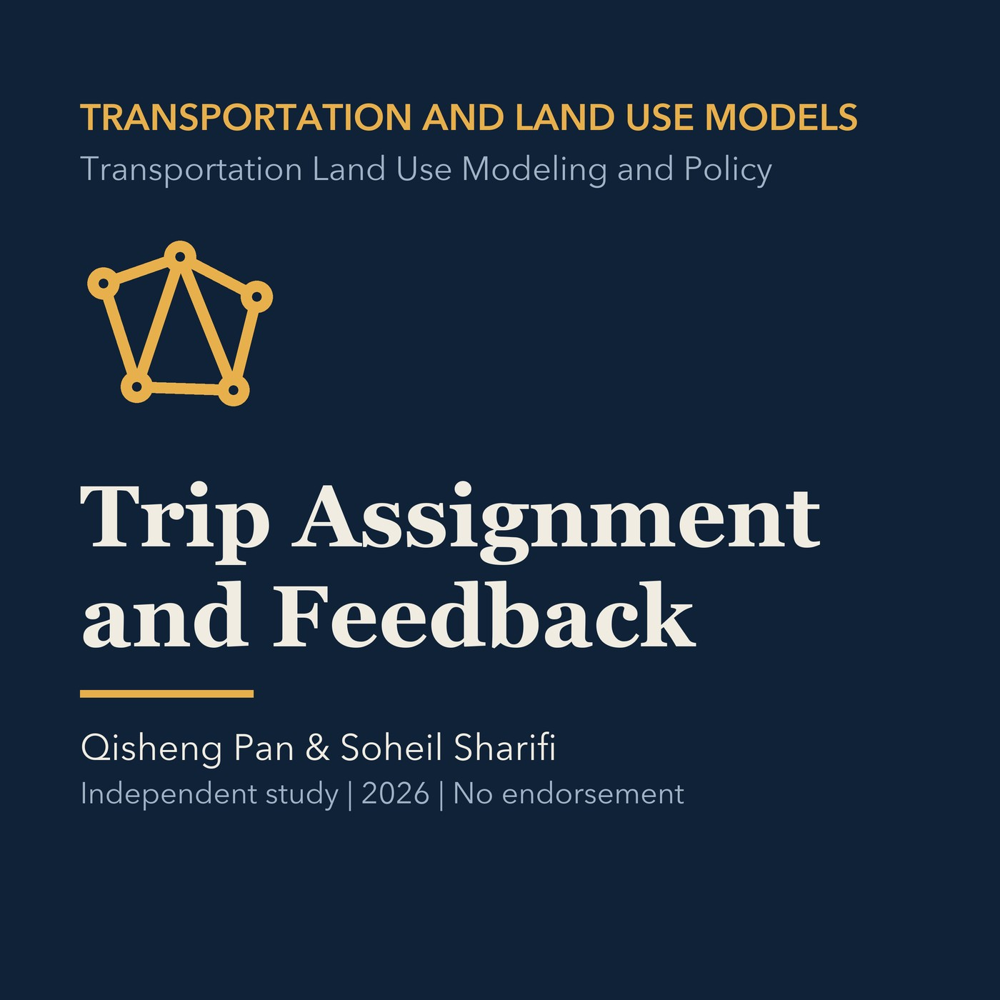

EPISODE 13
Trip Assignment and Feedback
Explains network paths, volume-delay relationships, equilibrium, assignment methods, feedback, and validation, then applies the concepts to Torrance.

- Stable GUID
f4f63e0d-0824-56b8-97fe-efc7e54435cd- Release
- transportation-land-use-modeling-v2026.2
- SHA-256
8a77f335fdaeb92b357580cc29f3b76674e598a06068740a528970b9291e1bd6